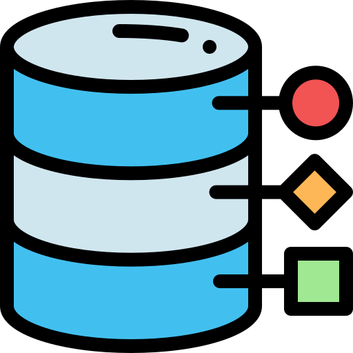
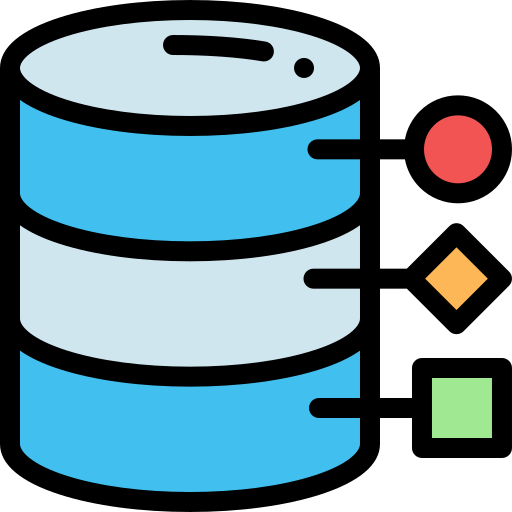

Jing Wu
a software engineer.
a software engineer.

A senior student majoring in CS at UC Irvine, with a bunch of software development experience.
Have a passion for creative problem-solving and learning new technologies.
Hope to be part of a great team and be able to create robust apps with smart people.
Actively seeking 2022 summer internship / full-time job.
Developed a back-end heavy system that manage the international cargo transportation storage and customs clearance information database. (MySQL, Java, Database design and implementation)
Developed the user interface for the system using front-end technologies like HTML5, CSS, Javascript, AJAX and connect with back-end system. Support basic input, query, delect, search and other functions.
Implemented daily report generation for the system.(JSON, Javascript, JQuery, Bootstrap, HTML5, CSS)
Develop an Instagram-like large pet raising communication platform
Developed full-stack web application, IOS/Android APP from scratch with the other five founders
Implement the front-end and back end part by React and Node.js, Implement payment and RTC modules
Writing development documents, do product design, draw flow chart, finding and contact suppliers

 

Developed a dynamic full stack web application
• Developed Movie e-commerce website and mobile App. Applied Java, Javascipt to fulfill RESTful API, and JDBC with MySQL to access movie database.
• Improved web security by prepared Statement and password encryption, implemented data-set insertion by Stored Procedure and XML Parsing and scled up the App by Master/Slave, Load Balancing.
• Deply Tomcat Servlet on AWS server as a framework
• Optimized query performance by Connection Pooling and Prepared Statement. The running time reduced by 20%.
• Optimized user experience by creating features including Full Text Search, Auto-complete, Fuzzy Search.

Construct a UCI campus-wide search engine
• 50,000+ UCI Web pages Crawls in Python
• Implemented TF-IDF for result prioritization using Python.
• Established a search engine API. Supports Disk-based Inverted/Positional Index, Keyword/Phrase Search.
• Optimized result accuracy by using PageRank and upgraded word positions and n-gram indexing